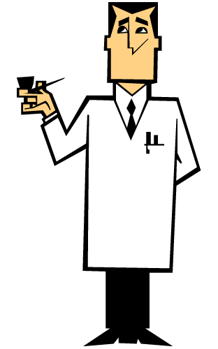

|  |
PROFESOR UTONIUM
El Profesor Utonio es un personaje de ficción y el padre y creador de las Chicas Superpoderosas. Fue dueño de Mojo Jojo en el pasado cuando era simplemente un mono tranquilo y feliz. Perfil Ojos: Negros Cabello: Negro Edad: 30 años Especie: Humana Ocupación: Científico Personalidad: Responsable de la creación de las Chicas Superpoderosas, siente un gran amor hacia ellas y las considera sus hijas. Por todo eso también puede ser irritable, dominante, inútil y excesivamente analítica a veces. Pese a ser un científico con gran capacidad intelectual, tiende a ser algo ingenuo y tímido. Se toma muy enserio la crianza de las chicas, por lo cual aún cuando ellas tengan poderes sobrehumanos, les regaña si no acceden a realizar sus deberes domésticos, como ordenar su habitación, bañarse o comerse toda la comida. Inicio |